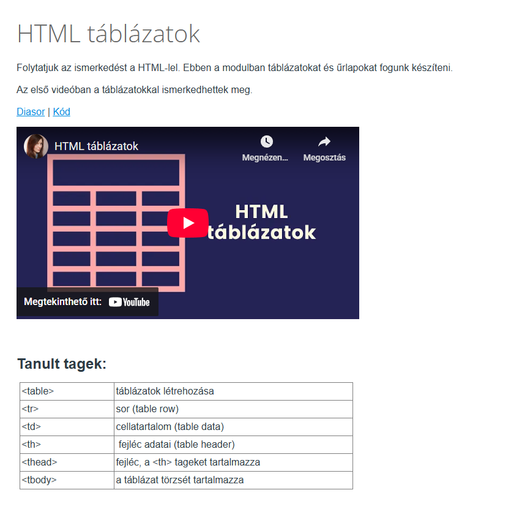

About the original course
The original blended learning course was developed and delivered in 2020 at Eötvös Loránd University in Budapest, Hungary. It was an HTML & CSS basics module within a digital literacy course for humanities students. The course combined in-person introductory lessons with self-paced video tutorials, code-alongs and practical exercises which led to a final website project. The e-learning materials were hosted in Canvas LMS, which was also used to manage assignment submissions and grading.
Here you can see screenshots of a typical module page, along with an interactive CodePen exercise illustrating a sample task.
Screenshots:



CodePen Exercise:
Original instructions:
Create the website shown in the image!
Outcomes:
All students successfully created their own website and completed the course. However, several insights emerged. Beginners often struggled to grasp core CSS concepts, which created early friction and reduced motivation for some students. In addition, many lacked debugging and problem-solving skills, which caused them to get stuck during exercises. The e-learning module described above was designed to address these challenges.